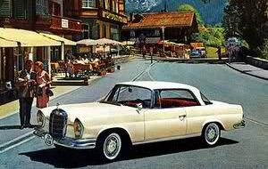
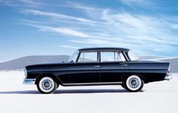
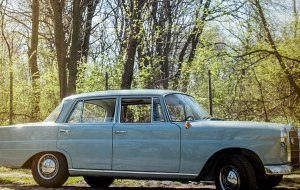

Mercedes "Reponja"
Mercedes "Reponja"
The strong influence of the American limousines that "chill" the feathers on the back parts did not like the German audience who walked with the exhibition in Frankfurt in 1959. Nevertheless, it was only a small initial shock because when it came to sales, it seemed that the new Mercedes would do a good job. Clearly, the feathers were not accidental here because this beautiful copy with the parent, European, and the target was a rich American market.
The initial models, introduced in 1961, were 4-cylinder, one gasoline engine and one diesel engine (190, 190D) and this series was labeled W110.
The spacious and luxurious cabin lubricated its owners and passengers who could feel more secure than in other cars. Namely, this Mercedes-Benz series was the first to go through much more serious crash tests (first congestion zones for the first time), and in many details it was noticed that Mercedes engineers paid much attention to safety (door hinges, panel switches ...). It was interesting also a vertical speedometer that was yellow at speeds of 0-50 km / h, from 50-60 km / h yellow with red lines, and from 60 km / h to more red.